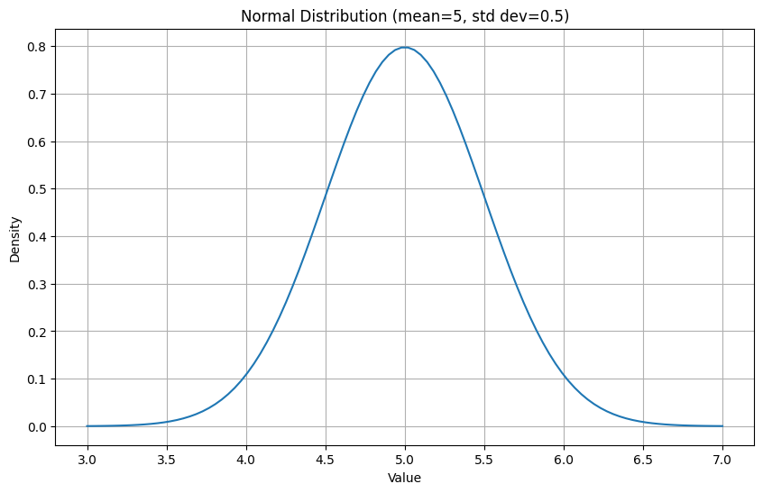
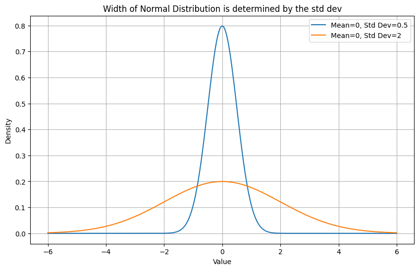
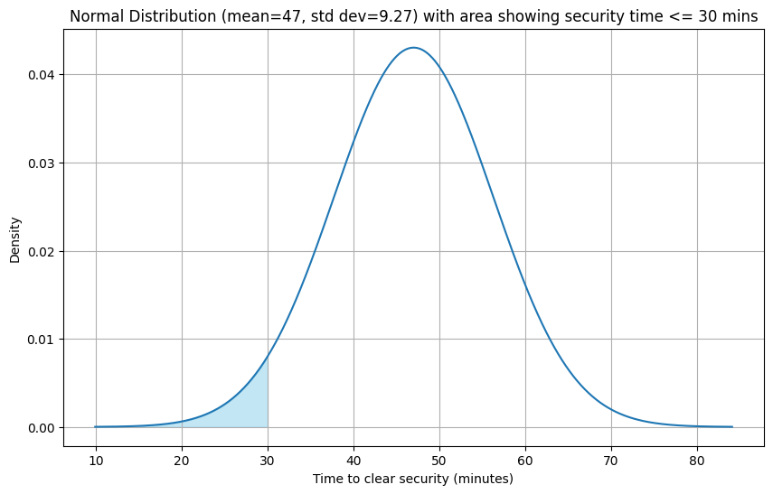
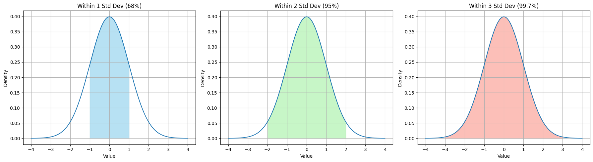

Probability distributions describe the likelihood of different outcomes for a random event.
Here are a few ways to think about it: * It’s a comprehensive description of the possible values a random variable can take and the probabilities associated with each of these values. * It can be viewed as a complete list of all potential outcomes, along with their respective probabilities. * Probability distributions offer a visual representation of all possible events and the probability of each occurring.
8.1 Normal Distribution
A normal distribution is a continuous probability distribution that is shaped like a bell curve that best describes the strength of possible beliefs in the the value of an uncertain measurement, given a known mean and standard deviation.
import matplotlib.pyplot as pltimport numpy as npfrom scipy.stats import norm# Parameters for the Normal distributionmean =5std_dev =0.5# Generate x-valuesx = np.linspace(mean -4* std_dev, mean +4* std_dev, 100) # Generate x-values around the mean# Calculate the probability density function (PDF) for each x-valuepdf_values = norm.pdf(x, mean, std_dev)# Create the plotplt.figure(figsize=(10, 6))plt.plot(x, pdf_values)# Add labels and titleplt.xlabel("Value")plt.ylabel("Density")plt.title(f"Normal Distribution (mean={mean}, std dev={std_dev})")plt.grid(True)# Display the plotplt.show()

The peak of the distribution is centered around the mean. The spread of the distribution is controlled by the standard deviation
The distribution is shown with a smooth curve instead of discrete bars.
The area under the curve always equals 1
The y axis is labeled density because the normal pdf returns a probability density instead of an actual probability
The Probability Density Function (PDF) for a normal distribution is given by: \[f(x \mid \mu, \sigma) = \frac{1}{\sqrt{2\pi}\,\sigma} \exp\left(-\frac{(x - \mu)^2}{2\sigma^2}\right)\]
Where:
x is the random variable
μ (mu) is the mean of the distribution
σ (sigma) is the standard deviation of the distribution
π (pi) ≈ 3.14159
e is Euler’s number ≈ 2.71828
import matplotlib.pyplot as pltimport numpy as npfrom scipy.stats import norm# Parameters for the first Normal distributionmean1 =0std_dev1 =0.5# Parameters for the second Normal distributionmean2 =0std_dev2 =2# Generate x-values (covering a reasonable range for both distributions)x = np.linspace(-6, 6, 1000)# Calculate the probability density function (PDF) for each x-valuepdf_values1 = norm.pdf(x, mean1, std_dev1)pdf_values2 = norm.pdf(x, mean2, std_dev2)# Create the plotplt.figure(figsize=(10, 6))plt.plot(x, pdf_values1, label=f'Mean={mean1}, Std Dev={std_dev1}')plt.plot(x, pdf_values2, label=f'Mean={mean2}, Std Dev={std_dev2}')# Add labels and titleplt.xlabel("Value")plt.ylabel("Density")plt.title("Width of Normal Distribution is determined by the std dev")plt.grid(True)plt.legend() # Add a legend to identify the distributions# Display the plotplt.show()

The Normal distribution shows how strongly we believe in our mean. If we are unsure and our observations are scattered, we allow a wider range of values (similar to the orange line), conversely, if all our observations are similar (ie small std dev) we believe our mean is accurate (blue line)
To find the actual probability of a value lying between x1 and x2 we need to integrate the function for these limits.
Normal distributions have a great feature where 68% of the data lies within 1std from the mean, 95% of the data lies between 2std and 99% of the data lies between 3std.
8.1.1 Vacation or Missed Flight? Learning Probability with Airport Wait times
Imagine you have booked a vacation to Hawaii and are really excited to take a break from work and just drink beers on the beach. You are wondering how far in advance you should reach the airport so that you can comfortably clear security and board the plane and not have to run through the terminal when the doors are just about to close.
You try to remember your last 5 airport visits and recall that it took you around 35, 40, 45, 55 and 60 minutes to get through security.
Your partner assures you that this time it will be different and that you will be done with security within 30 mins and that you should leave accordingly. Afterall, why go early and wait at the terminal!?
You being the overprepared traveller are not so convinced - none of the times up until now took less than 30 mins, what are the chances of it being different this time?
In reality, with only 5 past trips and none taking less than 35 minutes, modeling airport times as a normal distribution is a simplification. We’re using the normal curve here to learn how to calculate probabilities—not to make a real-life prediction. For actual travel planning, you’d want more data!
Looking at the data the mean μ =47 and standard deviation σ =9.27
You now want to know what is the probability, given the data you have observed, that you will be done with security within 30 mins. Since you hate the thought of missing your vacation you want to be 90% sure you’ll make it on time.
To get the probability, we need to integrate this function over all values less than 30 \[ ∫_{-∞}^{30} N(\mu = 47, \sigma = 9.27)\]
import matplotlib.pyplot as pltimport numpy as npfrom scipy.stats import norm# Parameters for the Normal distributionmean =47std_dev =9.27# Generate x-valuesx = np.linspace(mean -4* std_dev, mean +4* std_dev, 1000)# Calculate the probability density function (PDF) for each x-valuepdf_values = norm.pdf(x, mean, std_dev)# Create the plotplt.figure(figsize=(10, 6))plt.plot(x, pdf_values)# Highlight the area under the curve from -infinity to 30x_fill = np.linspace(mean -4* std_dev, 30, 100)pdf_fill = norm.pdf(x_fill, mean, std_dev)plt.fill_between(x_fill, pdf_fill, color='skyblue', alpha=0.5)# Add labels and titleplt.xlabel("Time to clear security (minutes)")plt.ylabel("Density")plt.title(f"Normal Distribution (mean={mean}, std dev={std_dev}) with area showing security time <= 30 mins")plt.grid(True)# Display the plotplt.show()

The area of the shaded region represents the probability of getting done with security within 30 mins or less given the observations
You’ll notice that even though none of the observations were less than 30 mins we still see possible values less than 30 mins due to the spread or standard deviation of the distribution.
Calculating the integral we get:
from scipy.stats import norm# Parameters for the normal distributionmean =47std_dev =9.27# Calculate the integral from -infinity to 30 using the CDFprobability = norm.cdf(30, loc=mean, scale=std_dev)print(f"The integral of the normal distribution with mean={mean} and std dev={std_dev} from -infinity to 30 is: {probability}")
The integral of the normal distribution with mean=47 and std dev=9.27 from -infinity to 30 is: 0.033336445863857034
We see that P(wait time < 30) = 3.3%, telling us there is only a 3% chance that you will be done with security within 30 mins.
Since you wanted to be 90% sure that you will make the plane on time you decide that this is not worth the risk and do what you always have done - reach 2 hours before takeoff and sit at the gate doom scrolling.
8.1.2 Key Takeaways
Normal distributions are great because we can think of a wide range of possibilities when we only know the mean and standard deviation of our data.
For any normal distribution with a known mean and standard deviation, we can estimate the area under the curve around the mean in terms of the standard deviation. * 68% of all possible values lie within 1 standard dev of the mean * 95% of all values lie within 2 standard dev of the mean * 99.7% of all values lie within 3 standard dev of the mean
import matplotlib.pyplot as pltimport numpy as npfrom scipy.stats import norm# Parameters for the Normal distributionmean =0# Using a standard normal distribution for simplicitystd_dev =1# Generate x-valuesx = np.linspace(mean -4* std_dev, mean +4* std_dev, 1000)# Calculate the probability density function (PDF) for each x-valuepdf_values = norm.pdf(x, mean, std_dev)# Create a figure with three subplots side-by-sidefig, axes = plt.subplots(1, 3, figsize=(18, 5)) # 1 row, 3 columns# Plot for 1 standard deviationaxes[0].plot(x, pdf_values)x_fill_1std = np.linspace(mean - std_dev, mean + std_dev, 100)pdf_fill_1std = norm.pdf(x_fill_1std, mean, std_dev)axes[0].fill_between(x_fill_1std, pdf_fill_1std, color='skyblue', alpha=0.6)axes[0].set_title('Within 1 Std Dev (68%)')axes[0].set_xlabel("Value")axes[0].set_ylabel("Density")axes[0].grid(True)# Plot for 2 standard deviationsaxes[1].plot(x, pdf_values)x_fill_2std = np.linspace(mean -2* std_dev, mean +2* std_dev, 100)pdf_fill_2std = norm.pdf(x_fill_2std, mean, std_dev)axes[1].fill_between(x_fill_2std, pdf_fill_2std, color='lightgreen', alpha=0.5)axes[1].set_title('Within 2 Std Dev (95%)')axes[1].set_xlabel("Value")axes[1].set_ylabel("Density")axes[1].grid(True)# Plot for 3 standard deviationsaxes[2].plot(x, pdf_values)x_fill_3std = np.linspace(mean -3* std_dev, mean +3* std_dev, 100)pdf_fill_3std = norm.pdf(x_fill_3std, mean, std_dev)axes[2].fill_between(x_fill_3std, pdf_fill_3std, color='salmon', alpha=0.5)axes[2].set_title('Within 3 Std Dev (99.7%)')axes[2].set_xlabel("Value")axes[2].set_ylabel("Density")axes[2].grid(True)plt.tight_layout() # Adjust layout to prevent overlapping titles and labelsplt.show()

This is very useful for assessing the likelihood of a value given even very less data.
8.2 Mission Complete: Summary
This chapter was all about getting a solid grip on probability distributions. We started with the basics, like probability mass functions (PMFs), and how they help us understand discrete variables.
We covered Bernoulli distribution, which is great for single “yes/no” situations
the Binomial distribution, which handles multiple independent trials with those same two outcomes.
We even walked through some real-world examples, from simple coin flips and dice rolls to things like e-commerce conversion rates and predicting stock market movements, showing how these distributions can help us figure out the likelihood of different outcomes.
We took a look at the Beta distribution. This one’s really useful for figuring out the probability of success when you’ve already seen some results, which is a bit different from how the Binomial distribution focuses on the number of successes.
Finally we saw the Normal distribution which is super important for modeling continuous data.
By wrapping our heads around these distributions and why they work, we’ve built a foundation for tackling more advanced statistical modeling.
8.3 Skill Tree Extensions: Recommended Readings
Bayesian Statistics for Beginners book (Donovan and Mickey)